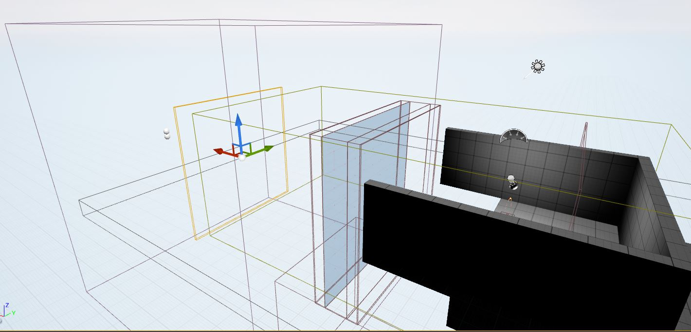

Thesis Week 1
Ramping things back up
During the winter break, I mostly spent it decompressing by traveling and spending time with friends and family. During my undergrad days, I experienced some serious burnout where it took me months before I was motivated to work on personal projects again. This time I feel like I was a lot more balanced with things even though I did end up juggling a handful of jobs and obligations. One thing I feel like I should mention is that I literally landed my dream job that I interviewed for before the holidays. 2022 is so far kicking things off better than any other for myself, hopefully I didn't end up using a years reserve of good fortune right off the bat! In a weird way I feel like I've already blew past the finish line since I got what I wanted out of IDM which was getting into a AAA gaming studio and this here is the epilogue to wrap things up nicely. It will be a little bit more difficult for me to keep motivated with my priorities shifting and everything but I am always determined to make cool things that will impress folks and leave a mark. Luckily I already did all the most difficult technical things so I'm going to be spending most of my time tweaking game-play based on feedback and my own opinions and working on visuals that make things easier to understand. Here's a little check list I put together, so far I'm just trying to get the low hanging fruit or the more important features. During the break I also came up with a story or theme to make things make more sense. You're in like a hanger bay and the enemy is blasting you with laser beams that can't get past the force-field, the laser beams you shoot can't either. So the enemy sends in drones that can fly in and destroy stuff with their energy self destruction blasts so you have to shoot them down as they get close. You have to use the correct blaster color for each one since some are strong against specific frequencies, putting your hands together activates a bigger gun to shoot down big targets. Debris doesn't hurt the ship but it will hurt you so the enemy will send some flying at you. The last form of drone is the opposite where it won't hurt you but it has to make contact with the ship to do damage, you'll have to stand in front of these guys so take them out. I also put together a little mood board with some imagery to try to help motivate and influence my visual design. I sent out a contact to my two assigned advisors so hopefully their schedules align okay with mine this semester. One of the important things I felt like I needed to add was a visual indicator to show the players when it is time to shoot. I made a quick halo shape in PhotoShop and parented it to one of the targets to test it out. After the target collides with a volume I placed, it will start to shrink and then change the material of the target to help the players time their shots. These sort of visual elements I come up with hopefully help improve the playability of my game. For week 2 I think I should have a better looking environment as well as enemies and instructions in the intro screen too. 
home
while (!deck.isInOrder()) {
print 'Iteration ' + i;
deck.shuffle();
i++;
}
print 'It took ' + i + ' iterations to sort the deck.';